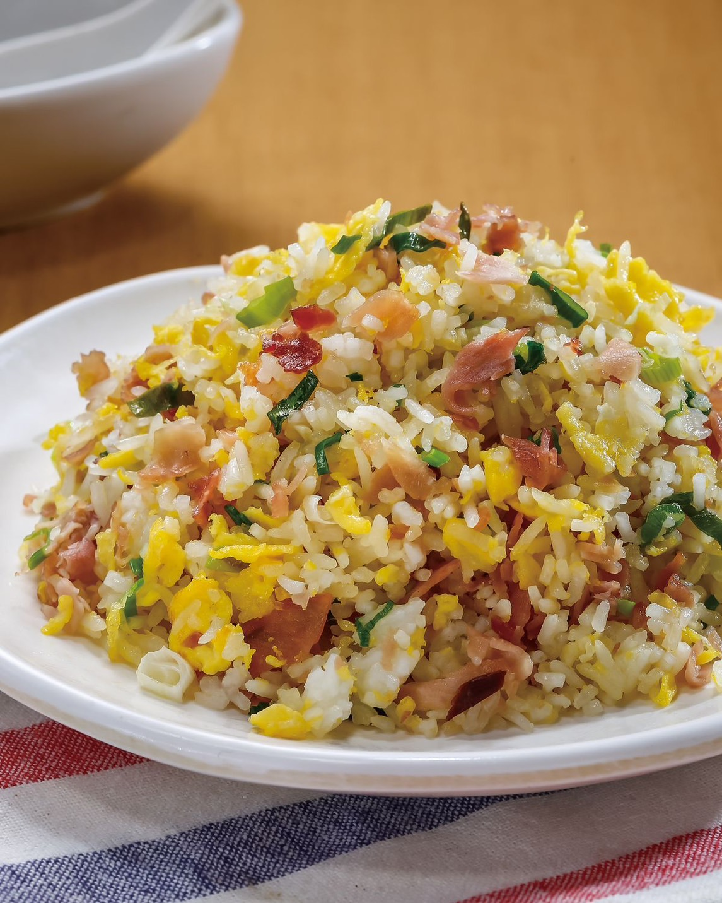

起鍋熱油，放入作法1火腿丁炒香，再放入洋蔥丁爆香，前兩者一起撥到鍋邊，倒入蛋液炒至半熟，接著將三者混拌均勻。
於作法2鍋中加入作法1玉米粒、冷白飯翻炒均勻，將白飯炒鬆後加入白胡椒粉和鹽調味。
（炒飯的時候要選擇冷飯，而非熱騰騰的白飯，這是為什麼呢？這是因為冷飯的水氣蒸發，更容易炒鬆的原故，也是炒飯粒粒分明的訣竅之一。）
翻炒至香氣四溢後放入奶油塊和作法1蔥花一起混合翻炒均勻即可。

番茄炒蛋介紹 糖醋排骨介紹 宮保雞丁介紹 心得
練習 影片 音樂
Your browser does not support the audio element. Your browser does not support the video tag.